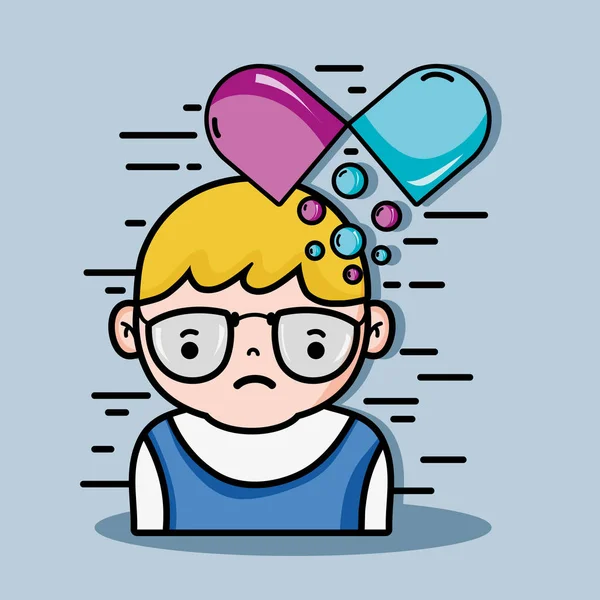

Algunos de los trastornos mentales más comunes incluyen la depresión, la ansiedad, el trastorno bipolar y la esquizofrenia. Estos afectan el pensamiento, el comportamiento y las emociones del individuo, y requieren diagnóstico y tratamiento profesional.
Las terapias más utilizadas en psiquiatría incluyen la terapia cognitivo-conductual (TCC), la psicoterapia, la terapia familiar y, en algunos casos, la farmacoterapia. La elección depende del diagnóstico y de las necesidades del paciente.
Promover la salud mental incluye estrategias como la educación emocional, el autocuidado, la reducción del estrés, el apoyo social y el acceso temprano a servicios de salud mental. Prevenir es tan importante como tratar.

